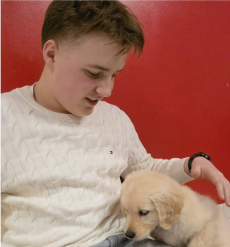

CÉSAR DUFOUR, Lycéen (2nde)

- Adresse : 37-1 rue des Aubépines, 59155 Faches Thumesnil
- Téléphone : 06 12 75 83 63
- email : cesar.dufour10@gmail.com
PARCOURS SCOLAIRE
J'étudie au lycée LaSalle Lille
Lycée LaSalle - Lille
- Depuis septembre 2025
- Option: First (anglais)
Collège A. France, Ronchin
Septembre 2021 à Juillet 2025
- Anglais Langue et Civilisation, Latin
- Eco-délégué
- Brevet avec Mention
QUALITÉS PERSONNELLES
- Curiosité
- Rigueur
- Organisé
- Respect des consignes
- Capacité à travailler en équipe
- Je sais me débrouiller seul
- Je prends des initiatives
CENTRES D'INTÉRÊT
- Animaux
- Nature
- Voitures
- Bricolage
- Sport: (BMX Race, Musculation, ...)
STAGES REALISES
- 5 stages réalisés à la clinique vétérinaire du Caducée